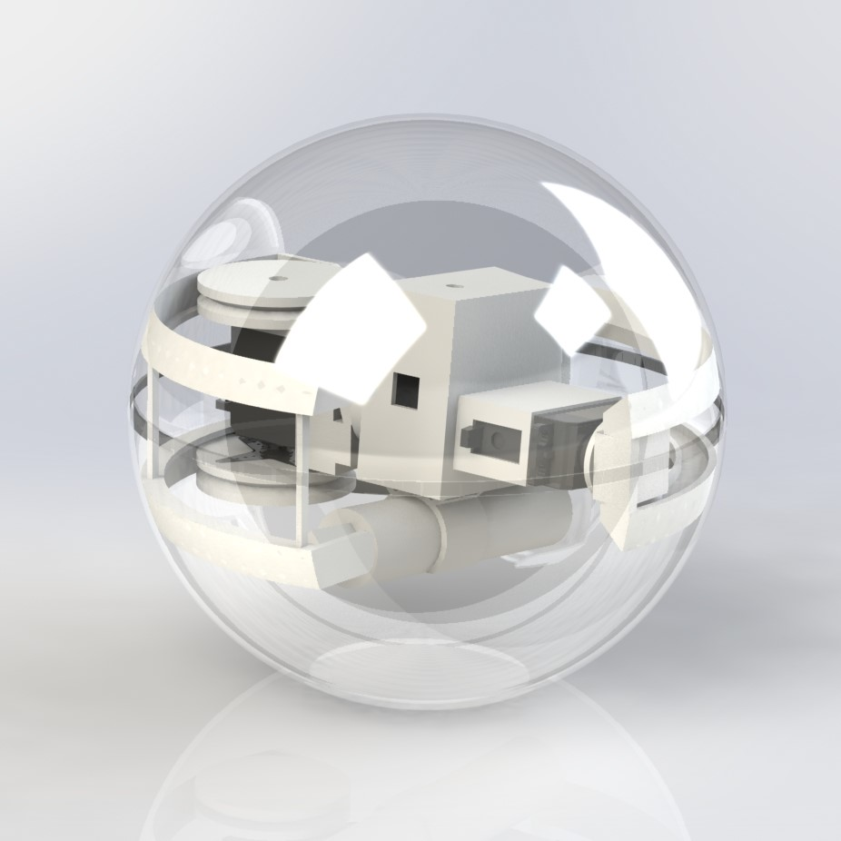
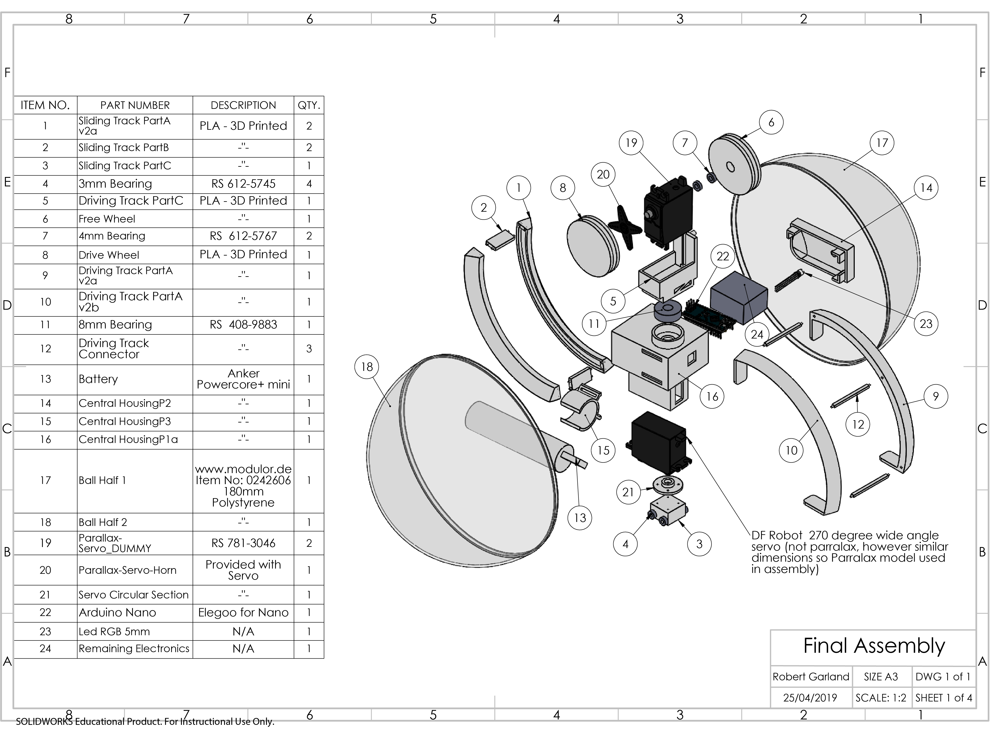
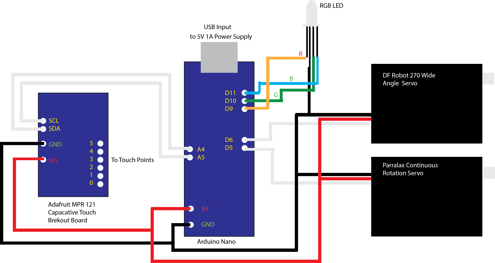
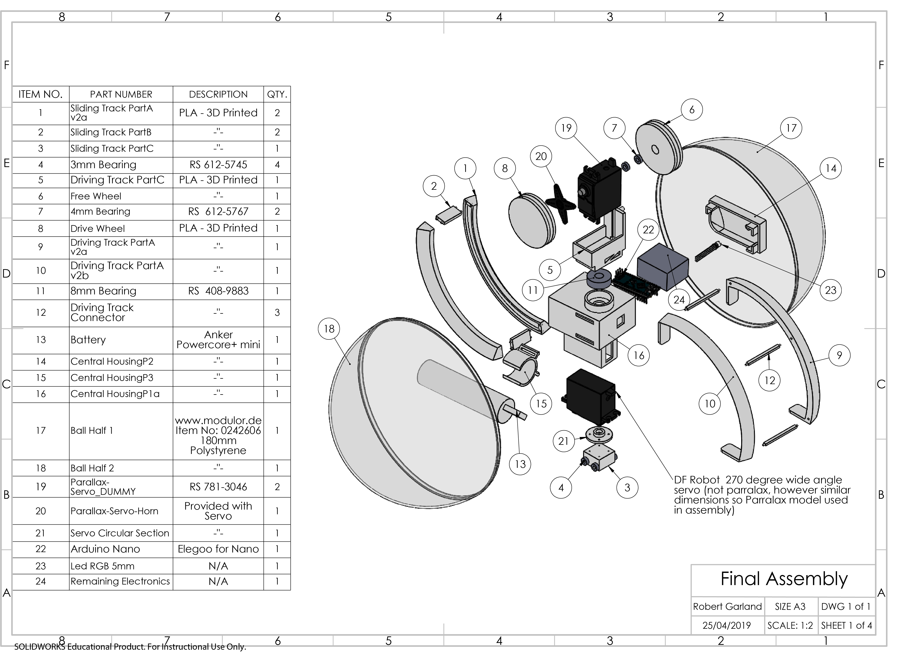
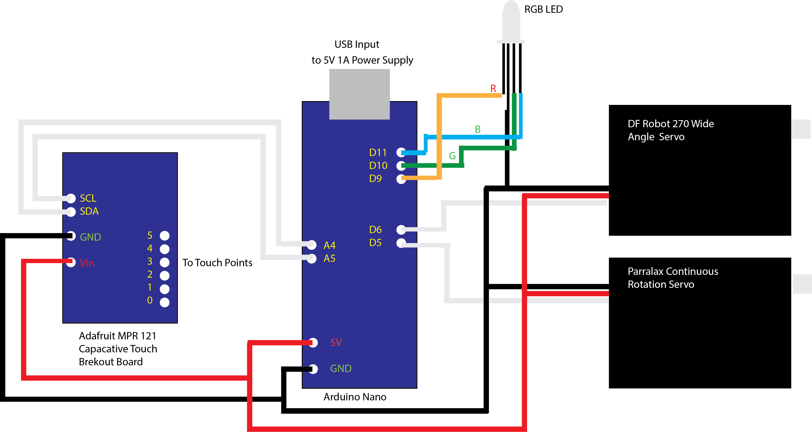

Touch Response Sphere
Introduction
Touch response sphere is a personal project currently in the prototyping and development stage. It is an interactive moving sphere that moves to the point on its surface touched by the user, through shifting its center of mass.
Initial Ideas for the design of the sphere were based on the Sphero gadget. The user could press one of six designated touch points and the sphere would shift it's centre of mass accordingly so that the point touched would now lie at the bottom of the sphere.

Development
An initial evolution taking the proposed design from the initial Sphero inspired design was made after making considerations about the accuracy that the proposed DC drive motors would provide. The design was subsequently developed to include a standard 180 degree rotation servo to handle the rotation of a track and a DC motor to handle a weighted car, which would deactivate once it passed over a button at the desired destination. Below are some sketches and a test for the initial track.
From testing this new track, it was found that the design hindered the rotation of the car, its weight balance was uneven. The fastening of the servo in the centre of the track would cause an imbalance, along with this the sizing of the electronics needed to be reduced considerably. This lead to further evolution and iteration leading to a final concept shown below, again to be iterated and tested, this concept uses two servos and removes the need for a car.

 

Above is an extruded drawing of the concept, a wiring diagram expressing how the internals will work in tandem with the arduino platform, along with this is a partial assembly of the final design (yet to have electronics installed and be placed inside the ball!)